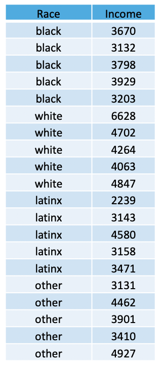
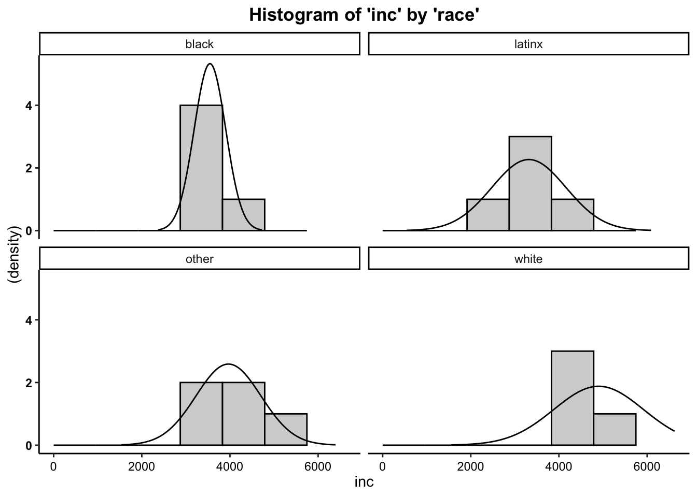
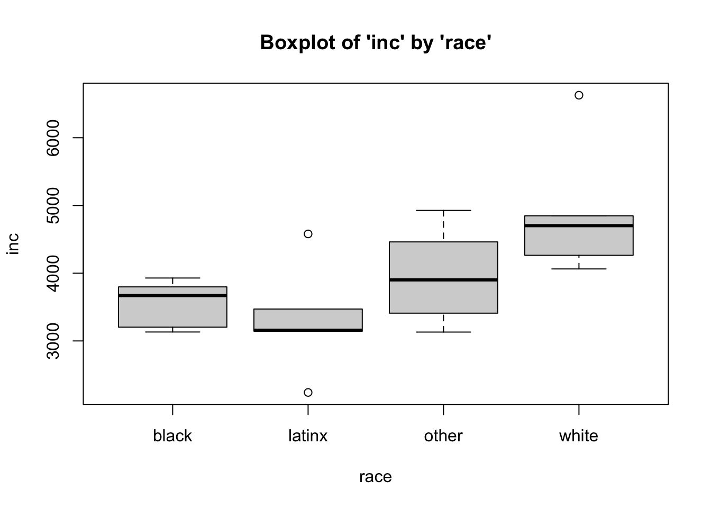
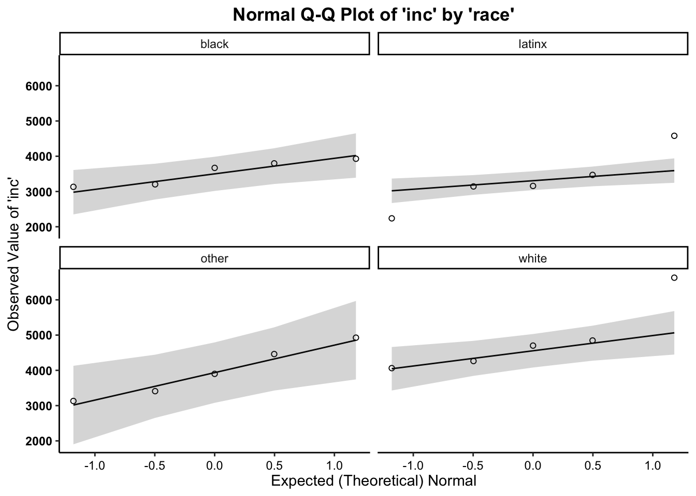
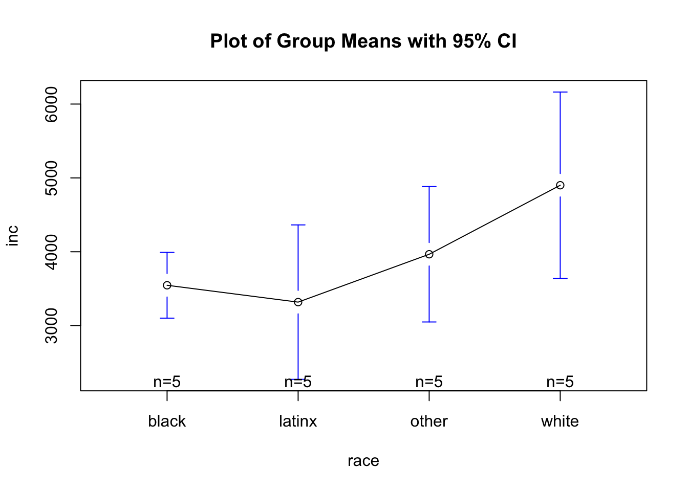

The ANOVA is a bivariate (two variable) test that examines the differences in means between three or more groups, in effort to see if the differences reflect true differences that we could expect to find in the population. The resulting test calculates an F value.
For this example, the ANOVA works because we have have four groups (black, white, latinx, and other), and we’re examining each group’s mean monthly income to see if there is a true difference in income amongst racial groups in the population.

In the table (above), we have a total of 20 people, randomly-sampled.
We see that we have a total of 5 people within each racial category
(black, white, latinx, and other), and each individual has a monthly
income value. We can use these data to create a data set, using a
combination of the concatenate, c(), data frame data.frame, and the repeat rep() functions.
The repeat function comes in handy when you have to type out the same values over and over again. This function has two arguments: 1) the thing you want to repeat, and 2) the number of times you want to repeat it.
Using this logic, we can apply the repeat function to create each variable, concatenating across the various categories of each variable, and combine these variables into a data frame… as such…
race <- c(
rep("black",5),
rep("white",5),
rep("latinx",5),
rep("other",5))
inc <- c(3670, 3132, 3798, 3929, 3203, 6628, 4702, 4264, 4063, 4847, 2239, 3143, 4580, 3158, 3471, 3131, 4462, 3901, 3410, 4927)Next, we merge the variables into one data frame, using the following:
Now we can call the data…
## race inc
## 1 black 3670
## 2 black 3132
## 3 black 3798
## 4 black 3929
## 5 black 3203
## 6 white 6628
## 7 white 4702
## 8 white 4264
## 9 white 4063
## 10 white 4847
## 11 latinx 2239
## 12 latinx 3143
## 13 latinx 4580
## 14 latinx 3158
## 15 latinx 3471
## 16 other 3131
## 17 other 4462
## 18 other 3901
## 19 other 3410
## 20 other 4927The assumptions for an ANOVA are…
Therefore, we meet the assumption of independence of observations.
##
## Descriptive statistics by group
## group: black
## vars n mean sd median trimmed mad min max range skew kurtosis se
## X1 1 5 3546.4 358.68 3670 3546.4 383.99 3132 3929 797 -0.16 -2.17 160.41
## ------------------------------------------------------------------
## group: latinx
## vars n mean sd median trimmed mad min max range skew kurtosis se
## X1 1 5 3318.2 842.1 3158 3318.2 464.05 2239 4580 2341 0.25 -1.45 376.6
## ------------------------------------------------------------------
## group: other
## vars n mean sd median trimmed mad min max range skew kurtosis se
## X1 1 5 3966.2 738.26 3901 3966.2 831.74 3131 4927 1796 0.13 -1.99 330.16
## ------------------------------------------------------------------
## group: white
## vars n mean sd median trimmed mad min max range skew kurtosis se
## X1 1 5 4900.8 1016.5 4702 4900.8 649.38 4063 6628 2565 0.82 -1.21 454.59we have met the assumtption for equal sample sizes. We can
also see that, when comparing the SD for all groups, there is not a
ratio larger than 3:1. For these data, the largest discrepancy between
SDs for each group is between black individuals (SD = 358.68) and white
individuals (SD = 1016.5), which is less than the 3:1 ratio suggested.
Therefore,
we have met the assumption for homogeneity of variance.
Plot the histogram for Monthly Income (Y variable) broken out by Racial Category (levels of the X variable), overlaying a normal curve…

Boxplots also provide a visual representation of the normality of a distribution. The boxplot has a box, a line through the box, two whiskers on either end of the box, and sometimes dots/points outside the whiskers. Below, we get a sense of what each part of the boxplot represents…
To tell if a variable is normally-distrubted using the box-and-whisker plot, generally, we want to see that there is some distance between the box and the end of the whiskers, that the box isn’t pushed too close to either whisker, that the median line (dot) is near the center of the box, and that there aren’t many outliers (dots) on the outside of the whiskers.
To plot a boxplot of Monthly Income, broken out by Race, we can do the following…

The quantile-quantile plot is a visual tool to help us figure out if the empirical distribution of our variable fits (or rather, comes from) a theoretical normal distribution.
We assess normality an break this plot out by a grouping variable.

We can see from the Q-Q plot that for group distributions of the outcome variable (monthly income), the data are somewhat normal, since there is no discernible pattern across the line (e.g. no strong curvilinear trend around normality line) for the income variable for any group/level (race). It is therefore safe to proceed with the statistical test.
Based on the the three visual depictions
above, the data seem normally-distributed.
Therefore, we meet the assumption of normality.
The calculation for the F-Test is:
\(F = \frac{{MS}_{between}}{{MS}_{within}} = \frac{\frac{{SS}_{between}}{df_{between}}}{\frac{{SS}_{within}}{df_{within}}}\)
where…
In addition, the degrees of freedom (\(df\)) for the test is…
\(df_{between} = k - 1\); where \(k\) is the number of groups \(df_{within} = N - k\)
To run the one-way ANOVA in R, we take the summary (output) of the
analysis of variance aov
function.
For the ANOVA, within the aov function, the dependent
(interval-ratio level) variable is listed first and the independent
(discrete/categorical) variable is listed second, separated by a tilde
~.

## Call:
## ow.anova(df = data, var1 = inc, by1 = race, plot = T, hsd = T)
##
## One-Way Analysis of Variance (ANOVA):
## df SS MS F p-value
## Between Groups (race) 3 7325888 2441963 4.0429 0.02569 *
## Within Groups (race) 16 9664314 604020
## ---
## Signif. codes: 0 '***' 0.001 '**' 0.01 '*' 0.05 '.' 0.1 ' ' 1
##
## Tukey's HSD (Honestly Significant Difference):
##
## Mean Difference lwr upr p-value
## latinx-black -228.200 -1634.495 1178.1 0.96579
## other-black 419.800 -986.495 1826.1 0.82793
## white-black 1354.400 -51.895 2760.7 0.06113 .
## other-latinx 648.000 -758.295 2054.3 0.56513
## white-latinx 1582.600 176.305 2988.9 0.02480 *
## white-other 934.600 -471.695 2340.9 0.26628
## ---
## Signif. codes: 0 '***' 0.001 '**' 0.01 '*' 0.05 '.' 0.1 ' ' 1In the output above, we see the F-obtained value (4.043), the degrees of freedom between and within (3,16), and the p-value (.0257, which is less than our set alpha level of .05).
To interpret the findings, we report the following information:
“Using a one-way ANOVA, I reject/fail to reject the null hypothesis that there is no mean difference between groups, in the population, \(F(?) = ?, p ? .05\)”
After finding a significant result in your omnibus/overall F-test/ANOVA, to identify where the differences lie, you can do two things:
As seen in the plot above:
As seen in the output above: